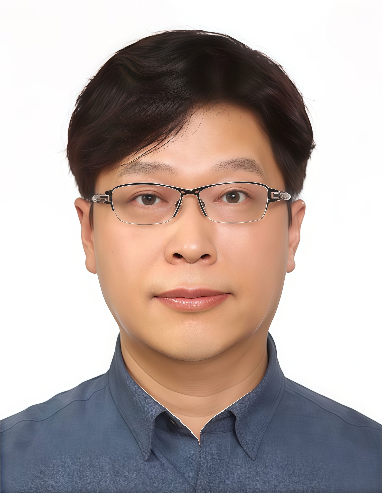

Keynote Speakers
Keynote Speakers
The SSD Isn't the Bottleneck, We Are
Viktor Leis
Bio: Viktor Leis is a professor at the Technical University of Munich (TUM). His research revolves around designing cost-efficient data systems for the cloud and includes core database systems topics such as query processing, query optimization, transaction processing, index structures, and storage. He earned his doctoral degree from TUM in 2016 and was a professor at the universities in Jena and Erlangen before returning to TUM in 2022. His research has been recognized with the ACM SIGMOD Dissertation Award and the VLDB Early Career Research Contribution Award.
Abstract
Over the past decade, flash-based NVMe SSDs have become both inexpensive and extremely fast, challenging the traditional dichotomy between fast CPUs and slow storage. Yet many database systems fail to exploit modern SSD performance, leaving a large gap between raw device capabilities and end-to-end throughput and latency. Closing this gap requires rethinking the database stack at multiple levels: the interface between the operating system and the DBMS, core architectural choices inside the engine, and meticulous low-level engineering. This talk distills lessons from the LeanStore project, which redesigns the storage engine to better match the characteristics of modern SSDs. We examine which long-standing abstractions become bottlenecks, which design principles remain valid, and where engineering details dominate outcomes. We close by revisiting these lessons in the cloud, where disaggregation and cost/performance trade-offs impose new constraints, but also open up new optimization opportunities.
AI Meets Graphs: From AI-Accelerated Graph Analytics to Graph-Enhanced Generation
Wenjie Zhang
Bio: Dr. Wenjie Zhang is a Professor in the School of Computer Science and Engineering at the University of New South Wales, Sydney. Her main research interests lie in large-scale data management and the applications. Dr. Zhang serves as an Associate Editor for IEEE TKDE, VLDB Journals and ACM TKDD. She has served on numerous organization and program committees for international conferences, including PC co-chair of ICDE 2025, APWeb-WAIM 2024 and WISE 2021, as well as Area Chair for VLDB, ICDE and ICDM. Currently, she is Chair of the Steering Committee for the Australasian Database Conference. Her research has been recognized with the ACM SIGMOD Research Highlight Award, CORE Chris Wallace Research Award, and 19 Best Paper Awards or nominations from conferences including SIGMOD and ICDE. Dr Zhang is an elected Member of the CORE Academy and a Fellow of the Australian Computer Society and the Royal Society of NSW Australia.
Abstract
Graphs have long been the foundation for modeling complex interconnected data, from knowledge networks and scientific datasets to social and e-commerce platforms. As these systems scale in size and complexity, research has increasingly focused on scalable graph data processing and analytics. At the same time, artificial intelligence is reshaping how we analyze and reason over data. In this talk, I will outline the evolving landscape in which learning-based techniques, including graph neural networks (GNNs) and large language models (LLMs), contribute to improving the efficiency and flexibility of graph analytics. In a complementary direction, I will also present how graph-structured data retrieval augments LLMs, enabling more reliable multi-hop reasoning for complex generation tasks. This talk highlights the emerging synergy between AI and graph data, forming a mutually reinforcing paradigm that opens new research opportunities and future directions.
Building a Unified, Adaptive, and Extensible System for AI-Powered Data Analysis
Meihui Zhang
Bio: Meihui is currently a professor of School of Computer Science and Technology, Beijing Institute of Technology (BIT). She obtained her PhD from the National University of Singapore (NUS). Her main research interests include Big Data Management and Analytics, Large-scale Data Integration and Modern Database Systems.
She is a winner of 2020 VLDB Early Career Research Contribution Award and 2019 CCF-IEEE CS Young Scientist Award. She is a co-author of VLDB 2019 Best Paper, IEEE ICDE 2018 best paper runner up, IEEE ICDE 2024 best paper runner up, and 2020 ACM SIGMOD Highlight Award paper. She is the co-recipient of 2024 ACM SIGMOD Systems Award. She has been elected to be the ACM Distinguished Member and IEEE Senior Member.
Meihui has served as Co-chair of VLDB 2024, Research Track Associate Editor of VLDB 2018-2020, VLDB 2023, VLDB 2026, SIGMOD 2021, SIGMOD 2023, ICDE 2018 and ICDE 2022-2023. She is serving as Associate Editor for VLDB Journal and IEEE Transactions on Knowledge and Data Engineering (TKDE). She was a trustee of VLDB endowment (2020-2025).
Abstract
AI is reshaping how we build data-centric applications, yet most real-world workflows are still stitched together across fragmented systems: databases for data storage and querying, separate libraries for feature engineering and model building, and external services for model tuning and deployment. This fragmentation introduces substantial interaction overhead, complicates governance, and prevents holistic optimization. In this talk, I will present Aixel, a system we are developing to overcome these challenges by offering a unified, adaptive, and extensible solution for end-to-end AI-powered data analysis. Aixel treats data, models, and tasks as first-class entities within a coherent framework, eliminating the disconnection between data management and model execution. I will discuss the design principles behind Aixel, introduce its four-layer architecture, and detail the core components. Finally, I will outline promising future research directions for advancing the field of AI-powered data analysis.
The Long Journey from Subgraphs to Autonomous Agents: Evolution of Graph Intelligence

Wook-Shin Han
Bio: I am currently a POSTECH Distinguished Professor and Director of the Brain Korea 21 (BK21) AI Project in the Department of Computer Science and Engineering at POSTECH. I received my Ph.D. from KAIST in 2001. My primary research efforts have been devoted to developing new techniques in core DBMS engine research. Early in my career, I developed an object-relational DBMS supporting multiple language bindings, and during my Ph.D. studies, I pioneered the tight coupling of DBMS with Information Retrieval (IR) features. As a postdoc at the IBM Almaden Research Center, I developed progressive query optimization for parallel DB2, a technique later adopted as adaptive query optimization by distributed DBMSs, including Spark. I also invented the novel concept of "parallelizing query optimization" for faster query compilation by exploiting multi-core architectures. Recently, our group developed three systems—TurboGraph++ (SIGMOD 2018), iTurboGraph (SIGMOD 2021), and TurboFlux (SIGMOD 2018)—for trillion-scale, incremental graph analytics. I regularly serve as a PC member for premier conferences such as SIGMOD, VLDB, and ICDE. I have also served as an Associate Editor for several international journals, including The VLDB Journal, IEEE TKDE, and SIGMOD Record. Currently, I serve as a Trustee for the VLDB Endowment and will serve as the General Co-Chair for SIGMOD 2028.
Abstract
Subgraph matching has long been the cornerstone for discovering meaningful patterns within complex networks. This keynote traces the evolution of scalable graph processing—from pioneering fast pattern-matching algorithms (e.g., TurboIso, DualSim) and large-scale parallel engines (TurboGraph) to continuous queries in streaming environments (TurboFlux). We then explore how these traditional database technologies are transforming into "Data Intelligence." Recent advancements, such as learned cardinality estimation and hierarchical graphs for multimodal retrieval, demonstrate that precise graph search is no longer just about querying data; it is becoming the foundational knowledge structure for modern AI systems. Finally, I connect this journey to the frontier of Agentic AI. For autonomous agents to execute reliable planning and tool-use, structured reasoning is essential. I will discuss how our foundational subgraph algorithms are evolving to serve as the "long-term memory" and "reasoning paths" for LLM-based agents, bridging traditional database research with the future of Graph Intelligence.